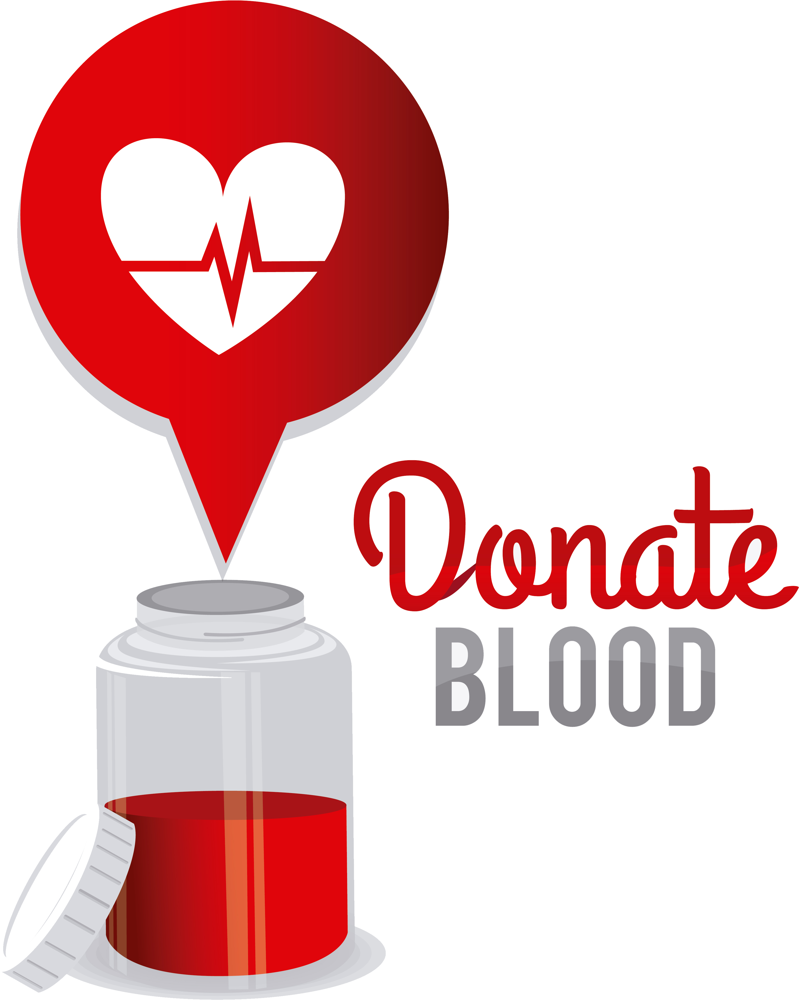
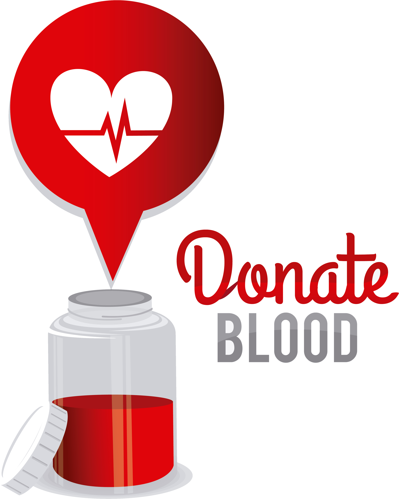

Why is it Important to Donate Blood?
About 328 million people currently live in the U.S. Each year, approximately 6.8 million people in the U.S donate blood. Annually, this adds up to about 13.6 million units of whole blood collected for donation in the U.S. The Red Cross provides about 40% of our nation’s blood and blood cell components to donors. Your blood donations are used for patients in need of surgery, cancer treatment and transfusions for blood loss from traumatic injuries. Want to know more about the blood supply in the U.S.? Visit the Facts About Blood Supply page.
Why Cancer Patients Need Blood
For cancer patients, blood transfusions can act as a resource to implement platelets back into the body after heavy treatments such as chemo or radiation therapy. For cancer patients, blood cells that are made in the bone marrow are often at risk. This lack of blood cell production can cause chronic diseases over time which may affect organs such as the kidneys, spleen and liver.
Blood Donation Types
Blood donations can yield a variety of blood products, including red cells, platelets and plasma. You may be most familiar with the typical whole blood donation drive seen at workplaces, schools and community events, but there are a few other ways to help give more life through the Red Cross.
Whole Blood Donation vs. Power Red Donation
As the name implies, “whole blood” donation includes all of the contents within the blood. This includes red blood cells, white blood cells, platelets and plasma. Whole blood donations are typically used to help patients fight cancer, blood disorders and traumatic injuries. The Power Red donation enables the donor to safely donate two units of red blood cells at just one appointment! The Power Red donation is similar to the whole blood donation, except a phlebotomist uses a special machine to ensure two units of exclusively red blood cells are collected. The machine returns the other blood components to you. Think of it as a more efficient way to yield more fuel for patients. The Red Cross highly encourages donors with O+, O-, A- and B- blood types to try a Power Red donation. For more information on eligibility to donate visit the power red donations information page.
 
